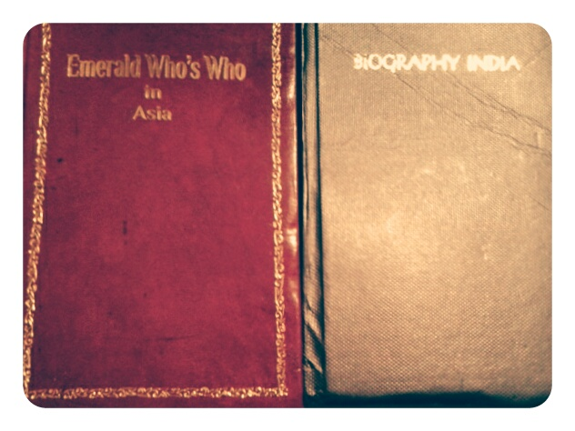

Dr Mallik In The Eyes Of A Press Correspondent
By H.T. Correspondent,
The Hindustan times, Patna, July18, 2000.
The Hindustan times, Patna, July18, 2000.
"Master of all trades retains hunger for learning" is Dr. Mallik in the eyes of a press correspondent of the Hindustan times, Patna, July18, 2000. The correspondent finds Dr. Mallik a doctor, engineer, scientist and businessman, all rolled into one. An MD, PhD, from USSR Kameshwar Nath Mallik holds command over four different and equally difficult streams.
One wonders whether it is possible for one single human to master four diversed streams, all at the same time and be a pioneering spirit in each. Having a super speciality degree in surgery, Dr. Mallik is expert in repairing the Mitral valves, organ transplantation, experimental surgery and oncology. He claims to have introduced more than 200 medical terminologies, has over 250 publications in medical science and many awards to his credit which include Bihar Shree-1992, unique personality of India Award-1984, Komsomolsky awards and the young scientist Lenin Award-1972.
With 33 years in research, teaching and medical practice, Mallik has business experience of over 18 years in industry, being the first man to be awarded a patent for lymphatic Venus communication by USSR, which got him into PGI Chandigarh to work on experimental liver transplantation and liver preservation.
Dr. Mallik has emerged as a 'last ray of hope' for many cancer patients. A notice in his clinic reads: "We undertake only those cases which are rejected by others". And he has reasons to be content with the fact that he has given life to over 1000 hopeless cancer patients. He also claims to have cured 12 aids cases till date.
A media shy, Mallik does all his experiments at his shabby looking clinic. Publicity for him is "an invitation to chaos," which he has "very bitter experience of handling".
Autopathy, a New mode of treatment that he has developed and mastered can detect and cure over 80 kinds of diseases, he claims. It involves taking patients' blood out, doing needful treatment to it and then introducing it back sublingually into ones system with no toxic or hazardous side effects. But the most surprising achievement is the artificially generated chain of petroleum products-petrol, diesel, kerosene etc- in his laboratory and has wisely patented the methods. He plans to put up unit for it's commercial production either in Kahalgoan or Meerut, if things go his way, he adds. A liquid discovered by him can increase the mileage of vehicle by 35 percent if mixed with petrol (0.1%only,v/v). He produces this on mass level and runs a whole network of establishment to distribute it in entire country in the name of Feacksol (petrol saver and substitute), Cuscutol (diesel saver and substitute) and exhaust pollution reducer. M/s Mallik Co-Petroleum India Pvt. Ltd. would soon be all India affair, he exclaims.
He has also developed a unique circuit which he claims, if put to use in each household, can generate the same amount of power it takes from the Government. You not only consume electricity but also repay back the same amount to the Govt., he claims. These have been put to public use on experimental basis in some houses. He was more than happy to show the place, where he turns his dreams in reality, his laboratory. One could mistake it with an electrician's workshop. The haphazard working room seemed to have nothing in place but the product it bears is unparalleled. His efforts have been noted in international journals/magazines/news papers. "Physics is my fiance and medicine is my wife", giggling Dr. Mallik adds.
The Background Of Dr. Mallik
By S. N. Choudhary.
Dr. K. N. Mallik, previously known as Kameshwar Nath Mallik or Kame Babu. Born as fourth son of his father after second World War, in a well known village - Kahua, District Darbhanga, Bihar (India). His father was a reputed person of the Area and was expert in Nepali Laws. He died at the age of 105 year on 15th January, 1980 at Chandigarh (India), where Dr. K. N. Mallik was working as surgeon consultant to PGIMER.
Sri Jag Narain Mallik, father of Dr. K. N. Mallik was blessed with two daughters and six sons. The eldest son, well known for his interest in education named as Dr. J. N. Mallik. The second son Mr. S. N. Mallik, who was more devoted to occult sciences, is giving his services for the protection of forest as Forest Officer. The third son Dr. R. N. Mallik, who is well known for his talent, research and dedication to Agronomy Science, is giving his services to the World Bank as Economic Consultant. Fifth son who is an expert in Mechanical Engineering is providing consultation services to the people of Bihar, is known as B. N. Mallik. The sixth son Mr. K. N. Mallik alias A. N. Mallik, is engaged with Banking Services. The eldest daughter Mrs. Uma Choudhary was a lovely house wife of a Railway officer - Mr. S. N. Choudhary. The younger daughter - Mrs. Parwati Choudhary is doing well with her family as a wife of a Police Officer - Mr. G. P. Choudhary.
Dr. K. N. Mallik was married with Asha Mallik, alias Kamini Mallik, Baby, the only Beautiful Young, Smart, qualified and highly skilled daughter of Sri Jay Deo Das of Imadapati Village of Darbhanga District (presently under Madhubani District). Her father, a Renowned Freedom fighter and great Writer, served Government of Bihar as secretary (Administration).
Mrs. Asha Mallik after having married with Dr. K. N. Mallik on 6-12-1972, gave birth to three beautiful daughters - Jyotsna, Tanuja and Jharna; and four smart sons - Sourava, Gourava, Sanyog and Avinash. She loved her husband and managed all the family affairs along with finance and business on non-conventional energy resource. She left for her heavenly abode at 0.20 AM on 29.7.1992, without letting any body know about her any pain or sorrow. She was sincerely devoted to her duties and always worshipped our Great Lord Shiva. She was always praised and astonishingly respected by all family members, associates and workers.
She was distinguished for her variable nature : sophisticated with sophisticated people, Childish with Children, Strict with rough persons, kind to poor and lordship with Rich persons, i.e. Good with Good people and Bad with Bad People. But she always wished better for every one and participated in sharing troubles of others.
Dr. K. N. Mallik was loved by his parents, relatives, villagers, friends and servants from the date of his birth. His mother was surprised for having painless birth of this child. Father was astonished having problemless postwar events and for improved Socio-Economic status. Teachers were incapable for assessing the ability of the child and permitted the child to complete his school education (Matriculation) at very early age. The child had equally good interest in agriculture & farming, sports and team leadership, social services and devotion to the God. He was found practising yoga from his very early age and he used to keep busy with studies or doing some experimentation like works for many hours together. He was known for his smartness, presence of mind, extra-ordinary knowledge of his subjects of studies, and was also appreciated for singing, playing musical instruments, painting, writing essays and poems, and for his memory. Elderly people used to like listening him for his witty and logical talks.
In August, 1952 he had a long dream in sleep regarding the forthcoming events of his Life. In February 1954 and August, 1962 again the same dream was recasted in detail. On the Basis of Experiences gathered during these years he could reassure himself about the future of his life and thus he became worry free knowing-what is lotted cannot be blotted. He was always surprised to see that all the times his dreams were true. Very seldom he used to have some dreams for reminding and reaffirmation of his future action of life. He could therefore, believe that Lord Shiva's Blessing is with him and as per dream he could happily enjoy the Sweet and Sour of his life. He knew well the future course of his life would be the same as shown in his dreams. He always knew before time about his educational and research out comes, marriage and children Births, changing Socio-Economic and family status, and about his role and participation in any unseen forthcoming events. He was several times recasted some portions of the dreams to explain the relation with some persons and events, and their correlations with several previous or forth coming Births. When ever he plunged in to meditation a silent forecasting used to reveal the forth coming results of the apprehended matters.
Surprisingly, as he was knowing-who shall be his wife and how would be his children as early as several years before the marriage, similarly his wife was also knowing about it and her time of death too. Her father was given full informations and address of the future groom of his daughter. In a very dramatic manner the marriage was ceremonised and the co-existence was maintained.
Dr. K. N. Mallik got his Academic Education in several Schools, Colleges and Universities - Viz. Kahua Primary & Middle schools, Balaur Middle School, Shivaraj Taulihwa High School, Model High School Samastipur, Bahera High School, Pokharam High School, Baheri High School, Supoul High School, R. K. College Madhubani, M. D. College, Nepalgange, P. K. R. M. College, Dhanbad & P. F. U. Moscow.
He travelled through several countries of Asia and Europe. He participated in a number of National and International Scientific symposiums - conferences and meetings on medical and non-conventional Energy problems.
In 1976 Dr. K. N. Mallik was awarded Ph. D in Medicine & Surgery. In 1972, he was awarded doctor of Medicine (M. D.). In 1973, he was awarded Degree for Interpretation (M.A.) In 1964 he completed his Bachelor Degree (B. Sc.) of studies in science. In 1960 he completed his school Education. In 1972 he was honoured for outstanding contribution to the medical sciences in PFU Moscow. In 1975 he was honoured for developing Technique to study Lymphatic Venous communication & Microvasculature (Patented in USSR). In 1985 he was honoured for out standing contribution in Appropriate Technology (IIBM, India). In 1988 he was Honoured for contribution to sciences and knighted as Bihar Shree (India). In 1984 he was honoured for converting wastes into useful products (NRDC - India). In course of 1972 to 1976 Dr. Mallik was awarded a number of Certificates and fellowships - memberships of different medical disciplines and societies.
From 1968 to 1976, he published and patented twenty one original discoveries and inventions in Medical Sciences. Between 1976 to 1982 he Published Eighteen original works in medical Sciences. Between 1982 to 1992 he patented and disclosed fortifive discoveries and inventions in Medical, Paramedical-Engineering-non conventional Energy resource and allied Sciences. Among them the most interesting for Dr. Mallik looks Invention of a Reactor for manufacturing Gems & Diamond from Cellulosic waste materials. His outstanding contributions in the several disciplines of science had been variedly exposed through telecasting, National - International news papers, Journals, Public Demonstration, Commercializations and by commercial organisations.
Biography
of Dr. MALLIK KAMESHWAR NATH.
Dr Mallik has been cognized as an inspiration to his profession and country for his achievements and professional influence, which enabled him to be recommended for induction into the ‘international order of merit’ as a representative of India. This iom is an exclusive league of prestigious individuals through out the world. And it is truly a tremendous tribute to him extending beyond the borders of country. Dr Mallik K Nath has also been requested to accept the united cultural convention’s invitation for induction into the legion of honor. He earned this exclusive distinction due to substantial efforts, through his profession and otherwise, which have cast broad-sweeping positive change on lives of those who live near & far from him. Peace, knowledge, compassion and the sharing of culture: all are qualities Dr Mallik K Nath has exhibited through important professional works he does do. Like the ripples a cast stone creates in a pond, contributions he makes in his everyday life have positive far-reaching effect. This outstanding quality of Dr Mallik has put him in the category of people who reflect the tents of wisdom, unity and understanding for the benefit of all nations. The abi & ucc continue to appreciate the significant efforts of Dr Mallik K Nath toward global understanding. Hence Dr Mallik has been recommended for the ‘legion of honor’ – a great tribute to Dr Mallik Kameshwar Nath as an individual behind the scenes who make tremendous personal sacrifices for the greater good [abi, july 2008].
Dr. Mallik Kameshwar Nath, a 'distinguished & admirable achiever [usa]' positioned in the hall of fame [usa] gallery of 21st century achievers, doctor of medicine and doctor of philosophy, [who was recommended by the abi for the prestigious title man of the year, the American medal of honor, and the key award], charter fellow adi/abi/usa, born in a village [Kahua, Biraul, Darbhanga, Bihar – India], on the Twelveth August Ninteen Fourtyeight, is a son of late Mallik Jagnarain [a judge / jury] and late Mallik Jagmaya [a house wife], took basic education [matriculation and intermediate of sciences] from India [Kahua, Biraul, Madhubani And Dhanbad] itself. He completed his higher education in 1976 [bachelor of sciences, master in foreign language, master in philosophy, doctorate in philosophy, doctor of medicine, advance courses of studies / training in general, transplant and experimental surgery, etc] from Moscow [PFU].
Dr. Mallik K. Nath married in 1972, in Bihar, with Mallik Asha, and was blessed with three daughters and four sons.
He was a figure head of a social organisation – BAL SANGH, during his early childhood, remained an outstanding / active cadet of acc / ncc and was awarded national trophy / shield for outstanding cultural performances, was secretary general of the students’ union, and the secretary of the students’ sports / cultural society. He remained chairperson of the young scientists’ association, the secretary general of the society – ffee [food – fuel – education – employment], the chairman of the seics ltd [r & d centre registered under industrial cooperative society acts], Chairman of the Synpyrol India [p] Ltd, chairman of the MSSF [p] Ltd, CMD of MCI[p] Ltd, Chairman of M/S Mallik’s Copetroleum adds energy, secretary of the Bihar blind peoples’ care society, and guests of honor of many institutional / social organisations.
He remained / is noted life members of the societies – transplantation and grafting, neurophysiology, anatomy-histology- embryology – morphology, gastroenterology / hepatology, association of surgeons of India, and the bio- energy society of India. All, these professional fields of sciences have been contributed by him with original research publications. To get a glimpse over the quantum of his scientific contributions and research works one should go through his three books – Autopathy [the techniques and science of self healing], Bihari – Sir [the technology and science of virtual energy] and ‘the solitary life of a scientist admirably distinct’ [describes mallik Kameshwar Nath’s Sacrifications for the causes of sciences and society / nation].
He worked for w h o malaria eradication program, as a tutor of operative surgery / topographical anatomy, as a lecturer / Asstt. Professor in the department of operative surgery and transplantation, as a medical scientist, govt. Of India, as a HOD of liver transplant surgery, as a director cum surgeon in-chief of the Madhu nursing home, as an owner of m/s Sorava enterprises and Dr. Mallik’s clinic, and as the chairman cum managing director of m/s Mallik's co-petroleum adds energy.
Though the ‘Bihari –Sir, is basically a science of ‘virtual energy- least known to modern scientists, therefore, for common understanding this natural science is elaborated as noted ahead.
The ‘Bihari-Sir’ science and technology can be understood as the science and technology of ‘sir’ – science. the s - stands for super conduction, i - stands for the image current and the r - stands for resonance of energy. Since this science was discovered, invented, developed and patented by a Bihari Indian scientist, this science and the concerned technology were named - ‘the Bihari –Sir science and technology’. The scientists of the world have highly praised this science. The world chairman of the ais, Dr. D. Desooja put this science on the top of the modern scientific interest. The victorious journey of this science and of its scientist is depicted here under.
During the event of ‘a known energy crisis’ in 1976 –77, on the instruction of the then prime minister – Morarji Desai, a group of energy scientists had important meeting with the inventor of the above noted science / technology. This meeting took place on a Sunday, in an office of the Haryana electricity board, Chandigarh. The inventor was suggested to get the invention / discovery patented with the help of NRDC – New Delhi. The NRDC – New Delhi, was accordingly instructed to support the ‘independent’ scientist.
A series of patents applications were filed and pursued for. Bench scale working models were prepared and developed.in 1979, many experts and scientists were put to verify the authenticity of this science and technology. It was done under closed supervision of the ‘Indian express’ correspondent. The tribune – Chandigarh, published the front page box news declaring the scientific break through akin the “ the fall of an apple on the head of i. Newton”. This attracted interest not only of the Indian mass, but of the parliamentarians too. The then prime minister Indira Gandhi expressed deep interest in this scientific breakthrough. On the instruction of the then energy minister, a big gathering of Indian scientists discussed the invention / discovery, and had demonstration of this energy generation, in the ioc research station, Faridabad. The claim that an automobile / scooter can run on the gas produced by this technology, was also verified for the first time in the world history of outstanding events. The energy ministery / dnes – new delhi, announced it as ‘ breakthrough in bio –energy research’, in 1986 through its ‘newsletter’ / a journal of international repute. This great scientific event was telecasted and widely covered by the national / international medias. The encyclopaedias were enriched with new terminology for new source of energy. Further, tremendous research, development and pilot studies were conducted by the scientist / discoverer / inventor. The scientist was widely exclaimed and appreciated. Among many credentials and laurels ‘award for appropriate technology, and the designation of ‘BIHAR SHREE’, MOTHER INDIA , THE WORLD FIGURE HEAD OF PEACE, FREEDOM & HOPE, are most commendable.
The scientific and the research works on this science and technology took a shape of the book – ‘the Bihari – Sir’. The international scientists’ committee recognized it as an independent science, and published it in a number of international scientific journals / magazines of repute. The most notable international journals of extreme reputation, which published ‘the Bihari –Sir science’ are – encyclopaedic science journal, Germany – rebel publication; scientific and research world, American ERESIAN BULLETIN WS, USA – NICS, ORKO PUBLICATION; JUBECH TREAMS OF SCIENCE AND INVENTION, TREAMS BULLET. J. AIS – 2004.
The scientist has been worldwide recognised as the ‘conceptual father of some of the social, natural and applied sciences. Among them most notable are – ‘the NEODEMOCRACY’, ‘The Bihari-Sir’ and ‘the AUTOPATHY medical science’. He has revolutionized the conception of ‘energy, time, space and matter’. The discovery of ‘the virtual energy’ is his most attractive growing baby.
Among two million personalities of the world, who created history for humanity in the field of ‘adept ACRETION ADINFINATUM ’ DR. MALLIK, the scientist was found one among the fifty noted history creators, and has been recognised as ‘the world figure head of peace, freedom and hope’, and was awarded ‘the world gold medal of freedom’.
MULTIDIRECTIONAL USEFUL FACET OF THE SCIENTIST- DR MALLIK WAS PROPERLY HIGHLIGHTED BY ‘THE HINDUSTAN TIME [SUNDAY] MAGAZINE’AND ACORDED WITH HIS OUTSTANDING CONTRIBUTIONS FOR HUMAN WELFARE LEADING TO HIS LAUREL FOR – GLORY OF INDIA, PERSONALITY OF EXCELLENCE, VIJOY RATTAN AND RECOMMENDED FOR VIJOY SHREE, RAJIVE GANDHI EXCELLENCE AWARD AND GOLD MEDAL, GEM OF INDIA AWARD – 2005, ARCH OF EXCELLENCE AWARD – 2005 AND INDIRA GANDHI SHIROMANI AWARD.
For the last number of years he / the scientist is being highlighted in a number of “who’s who” reference books as ‘a man of excellence of the world of twentieth century’. About his contributions and dedication to the sciences, and as a man in ‘open form’ one can read in the book ‘the solitary life of a scientist admirably distinct’.
On the occasion of the science centenary he / the scientist has been placed with the dignity as ‘2005 man of the year of the world’ in recognition of his scientific contributions during the last century. It is he who broke the hundred years’ scientific academic achievement records of the soviet union in the year 1976. In recognition of his immense scientific contributions to the world society the abi board of directors has conferred upon him ‘the noble order of international ambassadors’ an honorary decoration rewarding for outstanding services to world society, and has authorised him to be addressed as “the honourable Mallik K. Nath”.
Several national / international societies of repute have encouraged DR. MALLIK K. NATH by highlighting all over the world through a numbers of “who’s who” publications, e.g. Asia, Africa, America, Europe and others, and also have placed him in rare books of the world - ASIAN ADMIRABLE ACHIEVERS, DISTINGUISHED & ADMIRABLE ACHIEVERS 2005, THE CAMBRIDGE BLUE BOOK – 2007, MEN OF THE YEAR 1990 – 2006, AND 2000 OUTSTANDING INTELLECTUALS OF THE 21ST CENTURY. Over all DR MALLIK K. NATH has been recognised by the world and recommended for the award ‘man of the year of [the world] –2006’, life time achievement award, and hall of fame award. He has never been ignored by his nation and nationals, and honoured with the RASTRYA SAMMAN PURASKAR & GOLD MEDAL AWARD, BHARATH EXCELLENCE AND GOLD MEDAL AWARD, LIFE TIME ACHIEVEMENT AWARD AND GOLD MEDAL, LIFE TIME HEALTH ACHIEVEMENT AWARD AND GOLD MEDAL, RISING PERSONILITY OF INDIA AWARD AND GOLD MEDAL, GLORY OF INDIA INTERNATIONAL AWARD AND GOLD MEDAL, MOTHER INDIA AWARD FOR HEALTH EXCELLENCE WITH GOLD MEDAL 2005, MOTHER INDIA AWARD FOR UDYOG PRATIBHA GOLD MEDAL 2005, NATIONAL ACHIEVEMENT AWARD 2006 AND MANY OTHER. HE WAS ALSO RECOMMENDED BY THE NATIONAL AND INTERNATIONAL SOCIETIES FOR ‘RASHTRIYA NIRMAN GOLD AWARD & GOLD MEDAL, INTERNATIONAL GOLDSTAR AWARD, ‘SALUTE TO THE GREATNESS AWARD, DECREE OF EXCELLENCE, THE DA VINCI DIAMOND AWARD’ THE INTERNATIONAL PROFESSIONAL OF THE YEAR 2007, AND “OUTSTANDING NATIONAL CITIZEN AWARD 2006.
The advisory & recognition board of 'ibc' have conferred upon him "the global year of excellence - 2007, the excellence award" for his scientific contributions which gained grand height of reputation nationally & internationally during his own lifetime itself. Surmounting the above all his name has been put forward in the forth coming publication of biography of the world's 2000 outstanding intellectuals of the twenty first century. And his name entry into 21st century gallery of achievement wall of fame along with strong recommendation for the American hall of fame commemorative award.
-
KOHINOOR PERSONALITIES OF ASIA
— (Vol. III) - 2015 -
ASIAN AMERICAN WHO'S WHO
— (Vol. VII) - 2015 -

— Biography India and Emerald 2014 -
Preservation of liver graft
— Bull. PGI. 12.1.1978.39-40 -
The mode of functional activities of liver under the effect of cold flushing freeze storage
— Bull. PGI. 12.3.1978. 132-137 -
Effect of cold flushing freeze storage on the mode of functional activities of a liver
— IJS. 40.10.11.1978. 586-591 -
Hepar artificialis
— Bull. PGI. 13.3.1979. 119-124 -
Preservation of liver for 4 to 20 hours by the help of cold flushing freeze storage technique
— Bull. PGI. 12.1.1978.39-40 -
Preservation of liver graft
— IJMR. 7.1.1980. 468-475 -
Transplantation of hepatoduodenal Complex
— Hepatology. ISGE. XII. 1976 -
Suborthotopic transplantation of the Hepatoduodenal complex
— ISGE.XIX. 15. Simla, 1978 -
Behaviour of the natural intestinal lymphatic venous anastomoses after acute and chronic lymphatic out flow block
— ISGE. XIX. 21. Simla, 1978 -
Species variation in tissue (liver & duodenum) and blood biochemistry in light of hepatoduodenal complex preservation and transplantation
— ISGE, XIX, 21. Simla, 1978
Contacts
For more detail, please connect
Dr Mallik K Nath
C-75/C,P.C. Colony, Kankarbagh.
Patna, (Bihar), India